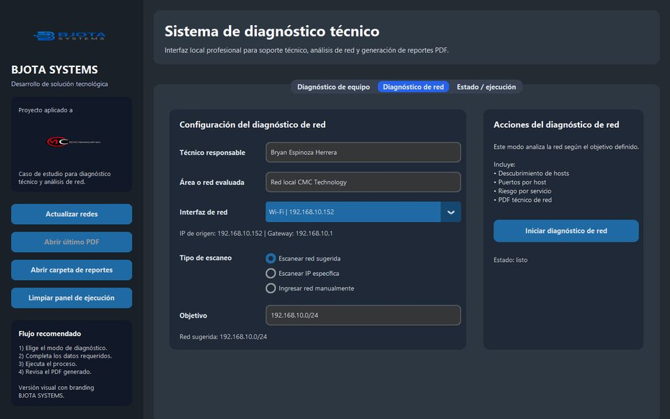

CiberseguridadImplementado en empresa
Análisis de vulnerabilidades en redes · CMC Technology
El soporte técnico de la empresa diagnosticaba a mano y sin visibilidad de la red. Desarrollé una herramienta portable que lo automatiza.
- Descubre hosts con Nmap y clasifica cada servicio expuesto en riesgo alto, medio o bajo
- Diagnóstico del equipo (CPU, RAM, disco, DHCP) y reporte PDF automático
- Proyecto de innovación SENATI 2026, validado en la red de la empresa
PythonNmapCustomTkinterReportLab